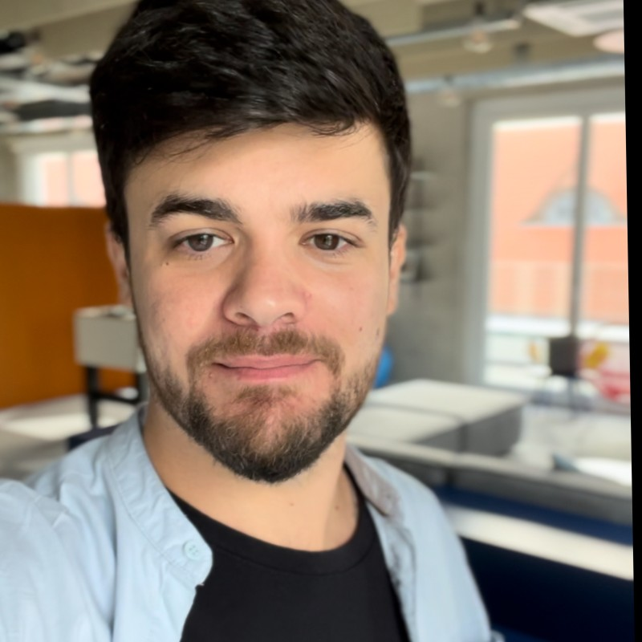

Rafael Borges

Senior Product Designer / Web Developer
Berlin, Germany
+49 1523 7801488 | sborges.rafa@gmail.com
Profile
Highly experienced Product Designer with 5+ year in SaaS environments, specializing in creating seamless end-to-end design solutions. Proven track record or improving user experience leading cross-functional desing projects, and contributing to scalable design systems. Adept at aligning product strategy with business goals and user needs. Expertise in Figma, usability principles, and user research, with a strong focus on consumer-centric design for business applications.
Experience
-
Senior Product Designer - Sixt
May 2024 - Present
- Led design for the post-booking flow, improve user journeys based on jobs to be done through booking management.
- Collaborated with engineers, product managers, and UX researchers in small, agile squads to deliver user-centered design solutions.
- Proactively contributed to design strategy and roadmap definition, ensuring alignment with business goals.
-
Product Designer - Omio Travel
Oct 2021 - Apr 2024
- Led the design of Omio Flex, increasing conversion rates by 8% through an innovative booking experience.
- Owned the design process for a self-ticket modification feature, delivering cross-departmental collaboration.
- Contributed building a robust design system, managing the execution og 50+ components across platforms.
-
Product Designer - Omio Travel
Oct 2021 - Apr 2024
- Led the design of Omio Flex, increasing conversion rates by 8% through an innovative booking experience.
- Owned the design process for a self-ticket modification feature, delivering cross-departmental collaboration.
- Contributed building a robust design system, managing the execution og 50+ components across platforms.
Certification & Courses
- Product Psychology - Growth Design | Nov 2023
- Design System - Memorysely | Mar 2022
- E-commerce and Digital Marketing - ComSchool | Dec 2013
Education
- UX/UI Design Bootcamp - Ironhack | Mar 2020 - May 2020
- Bachelor in Public Relations - Metodista University | Jan 2007 - Dec 2010
Skills & Tools
- Desing Tools: Figma, Adobe XD, Miro
- Expertise: User Research, Interaction Design, Design Systems, Prototyping
- Methodologies: Design Thinking, Agile, User-Centered Design
Others